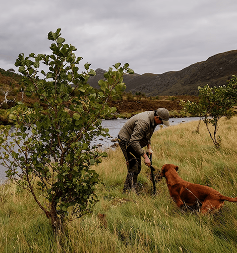
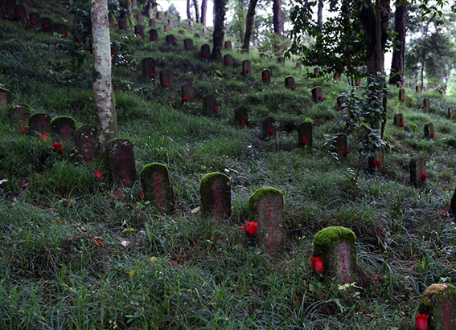
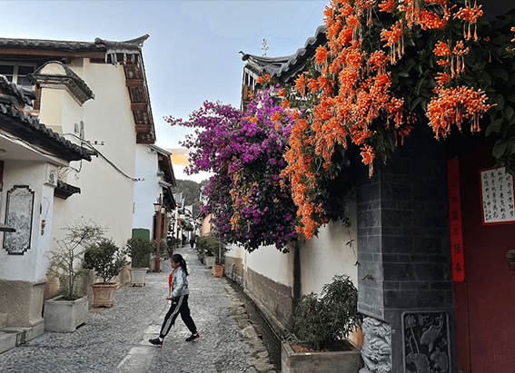
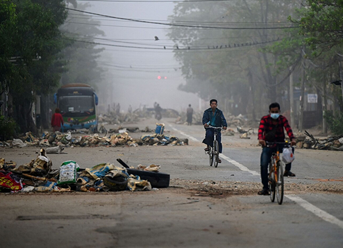

NATIONAL GEOGRAPHIC
Scotland could become first ‘rewilded’ nation what does that mean
TRAVEL
- 
At the end of the last ice age, Scotland was a truly wild place, where the Highland tiger, a distinctly banded wildcat, and the wolf, lynx, and bear roamed among Caledonian pine forests. The Romans called the country’s north “The Great Wood of Caledon.” But over time, humans purged the land for timber, charcoal, and agriculture. Native species such as wild boar, polecat, and elk vanished. By the turn of the 20th century, only 5 percent of Scotland’s land area was covered by forest.
Now the country is experiencing a zeitgeist moment for rewilding in essence, the rebuilding of ecosystems to their natural uncultivated states with new efforts and a matrix of wild lands and natural corridors spreading across the country. The actions of those responsible are aligning and, if successful, would make Scotland the first rewilded nation in the world.
“Scotland has majestic scenery and beautiful glens, but the ecological completeness has long been greatly diminished,” says Peter Cairns, executive chairperson of the nonprofit Scotland: The Big Picture. “Climate breakdown is one of the principal drivers for rewilding gaining momentum now because it unites everyone.”
Into the wild
No one in Scotland can quite agree when the rewilding movement officially began, but one popular perspective sets it in the late 1980s. That’s when environmental charity Trees for Life moved the conversation from preserving individual species and specific habitats the selective approach to conservation at the time to reigniting ecological processes with a landscape-scale approach.
Today, Trees for Life is behind the far-reaching Affric Highlands vision, a 30-year blueprint to transform Glens Cannich, Affric, Moriston, and Shiel a succession of valleys, in the Central Highlands—into an unbroken refuge. More immediately, it’s also responsible for a world first in rewilding.
Beginning in spring 2023, travelers who venture west of Loch Ness into Glenmoriston (also Glen Moriston) will be able to experience the immersive Dundreggan Rewilding Centre. Located amid pinewoods and juniper on Trees for Life’s 10,000-acre estate, the campus has been developed to preview the ambitious project and to show visitors ways of seeing nature anew.
This reinvigorated landscape is now home to 4,000 native plant and animal species, including a rush of roe deer, mountain hare, water vole, long-eared bat, otter, and black grouse. The hope is that visitors will be inspired to reengage with nature in new ways at home. For full immersion, the rewilding gateway, with exhibitions and classrooms, will house a 40-bed complex for researchers and volunteers.
Travelers can attempt to galvanize their relationship with everything from pine cones to pipits at Scotland’s most ambitious rewilding project, Cairngorms Connect. Concentrated on a 232-square-mile subarctic plateau in Cairngorms National Park, the largest in Britain, the multi-landowner enterprise has embarked on a 200-year plan to restore rivers and reseed ancient Caledonian pine forest. Already, visitors can join ranger-led tours and rewilding weekends to help revitalize the landscape. Next year 20 wildcats will be introduced by the Royal Zoological Society of Scotland for the first time.
Not all returning native species hide away in gorse-speckled glens. In recent years, according to James Nairne of the Scottish Wild Beaver Group, Eurasian beavers have been reintroduced and translocated to sites such as the Knapdale Scottish Beaver Trail in Argyll and Bute and Argaty Red Kites near Doune, northwest of Stirling. Visitors might glimpse the river-dwellers on an evening canoe safari along the superlative River Tay with tour operator Perthshire Wildlife. At sunset, the scuttling rodents are at their most industrious.
“The Scottish beaver was wiped out 400 years ago and yet there are now around 1,000 thriving back in the wild,” Nairne says. “By having this species reintegrated into our riverlands and lochs, we get more of everything else.”
In a landscape where nature-based tourism contributes nearly 40 percent of all visitor spend, according to government agency NatureScot, new ventures are being driven by other reintroduced species. One is the red kite, which has been reestablished on the Galloway Kite Trail on Loch Ken in Kirkcudbrightshire, while the golden eagle is now being bred in the braided Moffat Hills, thanks to the translocation of 40 raptors by the South of Scotland Golden Eagle Project.
Taking aim at the traditional, Victorian-era country sports estates of the Highlands, meanwhile, is Alladale Wilderness Reserve, in Sutherland, 50 miles north of Inverness. Once the sole realm of a dozen or so deer stalkers, the 23,000-acre plot now welcomes roughly 1,500 annual visitors. They arrive, as “wildlife laird” Paul Lister, puts it, to “come to the end of the road, to connect to the environment, and to feel spiritual.”
Comments :
- john Very good
- john Very good
Leave a Reply
Your email address will not be published. Required fields are marked*
Related posts:
-
The stories I learned walking the Burma Roa perhaps WWII’s greatest engineering feat
It unspools north from Myanmar, or Burma, to the jungled hills rumpling the border of China. Near Tengchong, an ancient Chinese trading post leveled by U.S. bombers in World War II, it bypasses a McDonald’s closed by COVID-19
View article -
This ‘culture of introverts’ prefers to have conversations in song
Fiftyish. Squarely built. Face reddened by the subtropical sun. King Li is a community leader among the Bai ethnic minority in the rumpled, green mountains of Yunnan Province. A friendly man. But reserved. Soft-spoken.
View article -
A storyteller on a global trek maps his walk through a city agonized by a military coup
Perhaps at the makeshift shrines of its dead. Take, for example, the ephemeral memorial of Khant Nyar Hein.
View article